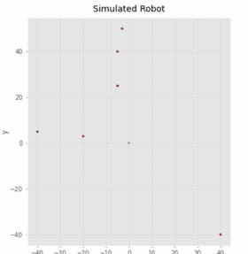

|
A selection of research, competition, and course projects. |
 🧭 frontier exploration, RRT* and a SAC local planner on a real TurtleBot 2 Hands-On Planning, Universitat de Girona |
|
 🦾 whole-body control and behavior trees for ArUco-guided pick and place Hands-On Intervention, Universitat de Girona |
|
 🗺️ Split-and-Merge line extraction and GTSAM iSAM2 factor-graph SLAM Hands-On Localization, Universitat de Girona |
|
 |
 📍 EKF localization, map-based localization and SLAM for a differential-drive robot Probabilistic Robotics, Universitat de Girona |
| ← back to home |